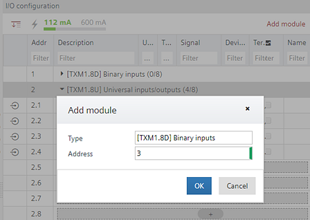

将 TX-I/O 模块添加到总线接口模块（仅适用于 TXB3.M）

Add TX modules and accessories
- You have added a bus interface module.
Adding devices
- Go to Building > Building structure.
- Right-click a bus interface module and select Go to engineering.
- Open the I/O configuration task.
I/O configuration - Click Add module.
- The Add module dialog box opens.
- Select a TX module from the list.
Device list
- You have added a TX module to the bus interface module. You can now create and assign I/Os to the module.
Creating I/O data points